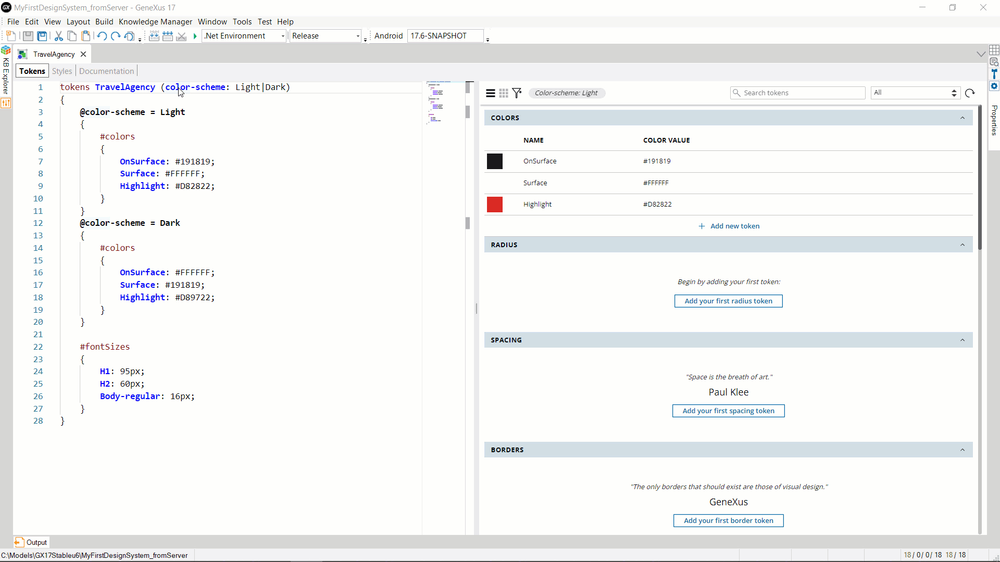

Design System Tokens Options (GeneXus 17 Upgrade 9)
The set of tokens of a Design System can be parameterized so that the value of some or all the tokens can be varied according to the options being used for the parameters at runtime.
A clear example is when you want to have a Light and a Dark mode for the application. This variation usually affects only the colors; therefore, it would be enough to add a parameter to the TokensSetName representing the mode, specify that its possible values will be Light and Dark, and set the values of the color Tokens for Light mode and of the color Tokens for Dark mode —for those that change according to the mode.

Depending on the value of the color-scheme option selected at runtime, the classes that use the OnSurface, Surface and Highlight color Tokens will vary the associated values and therefore will be displayed differently at runtime (the generation of the DSO takes them into account and sets the corresponding selectors for each token depending on the parameters chosen):

In Design System Tokens, the general syntax was presented showing parameters and conditions as optional:
tokens TokensSetName [( option1 [, option2]... )]
‘{’
[tokensDeclarations]...
‘}’
Where:
tokensDeclarations has the following syntax:
[option_condition]
‘{’]
[#token_group
‘{’
[token_name: value[unit]|valuewithData ;] ...
‘}’
] …
|[tokensDeclarations] ...
[‘}’]
optioni has the following syntax:
option_name: value1 ‘|’ value2 ’ value3 }...
Where:
option_name: Parameter by which the definition of some or all tokens can be varied.
valuei: Value that can take the option_name parameter.
In short, the option is assigned a name such as color-scheme, and the list of values it can take is displayed separated by "|." Values are not enclosed in quotation marks.
option_condition has the following syntax:
@option_name1 = value1i [and @option_namei = valueik]...
Where:
option_namem: One of the parameters of TokensSetName.
valuemn: One of the values listed for the option_namem parameter.
Example
tokens MyTokensSet (color-scheme: Light|Dark, platform: Native|Web Angular| Web)
{
@color-scheme = Light
{
#colors
{
primary: black;
}
}
@color-scheme = Light and @platform = Native
{
#colors
{
primary: grey;
}
// more
}
// more
}
Nesting is also valid, and behaves like AND:
tokens MyTokensSet (color-scheme: Light|Dark, platform: Native|Web Angular|Web)
{
@color-scheme = Light
{
#colors
{
primary: black;
}
@platform = Native
{
#colors
{
primary: grey;
}
// more
}
}
// more
}
Set the value of an option at runtime
In order to assign and change the value of the parameters by code, the Design System external object, inside the GeneXus module, provides the SetOption method.

If an option has no value at runtime, only the tokens not conditioned according to the option will have a value. The others are left without a value.
The dark / light example is provided for illustrative purposes only. With these parameters, you can have any custom option that the developer wants to define. Therefore, there is no reason to vary only the color tokens. Conditions can be set for all token groups.
In the case of color-scheme, since the operating systems allow defining this option, the idea is that the application can take it directly from there by default. If this is what you want, then you have to enable the Enable Preferred Color Scheme property, which for now is only valid for main objects of Angular or native applications.
Image variation
It is also possible to vary an image at runtime according to the options. See Image variation by Tokens options.

Imported tokens
If a DSO A or only its token set is being imported into a DSO B (always from the Styles tab) and it has defined options not needed in DSO B because its tokens will not be varied by those options, the tokens from DSO A can be used in the classes of DSO B without having to declare the parameters again.
Example:
Tokens DSOA_Tokens (option1: a|b)
{
@option1 = a
{
#colors
{
primary: red;
}
}
@option1 = b
{
#colors
{
primary: blue;
}
}
}
Tokens DSOB_Tokens
{
#colors
{
secondary: black;
}
}
Styles DSOB_Styles
{
@Import DSOA.tokens;
.class1
{
color: $colors.primary;
background-color: $colors.secondary;
}
}
Suppose that an object has DSOB as its associated Style, and contains a TextBlock with class class1. At runtime, the TextBlock font will look red or blue, depending on the option set for option1. In addition, it will always be displayed with a black background color.
To set the option at runtime you can use the SetOption method seamlessly even if the option doesn't come from the DSO itself, but from an imported one.
In the example, you could initialize the option:
DesignSystem.SetOption(option1, a)
Availability
Since GeneXus 17 Upgrade 6.